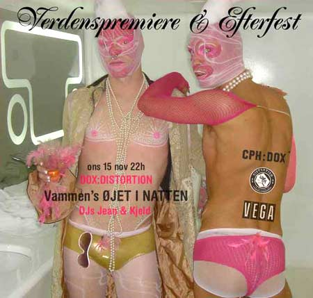

Filmen blev vist i Store Vega den 15. November med fest bagefter.
| CPH:DOX - Øjet I Natten | 15. November 2006 |
 |
|
| Hairwerk, Alexis, Dennis Agerblad, Puta, Knud Vesterskov & Søde Car O'lina fra dunst medvirker i filmen som handler om Københavns natteliv. Filmen blev vist i Store Vega den 15. November med fest bagefter. |
|